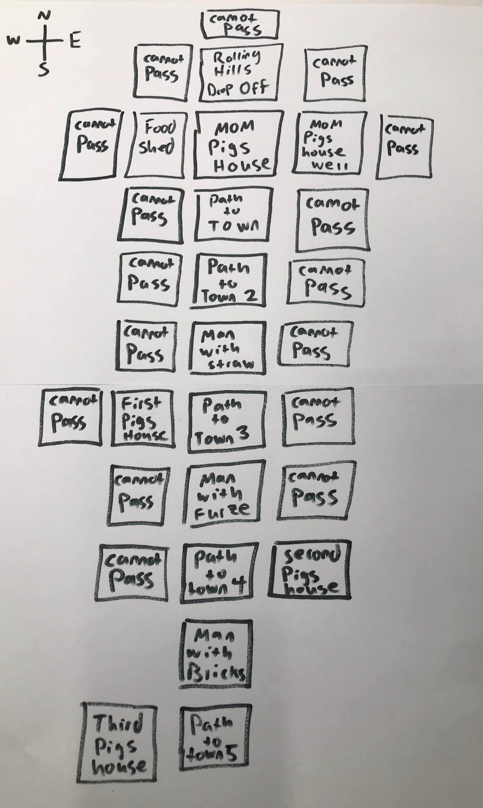
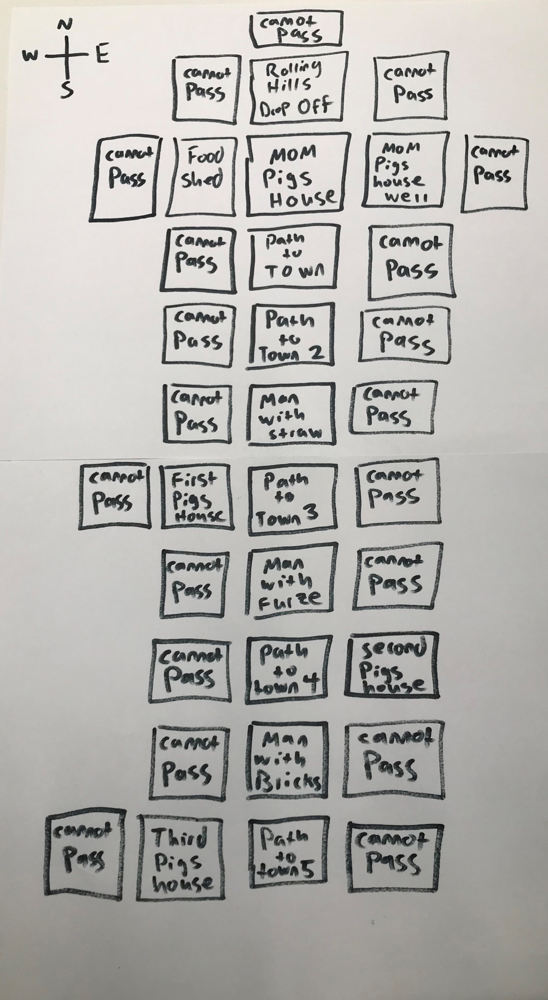

This is going to go just like the First and Second Pigs Houses. We are going to make a Man with Bricks Box, as well as an additional box of Path to Town, ending with a Third Pigs House box.
Now we are going to block off all the paths we do not want people to take. Add in your Cannot Pass boxes where they need to go.
Again, the blowing down house attempt will come in the code but we are sticking to the map for now.
We Have now finished our Fourth Key Point of the map!